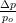
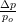
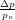

The preprocessing part is shown first.

Followed by the initial coordinates and the final coordinates for a regular (right side) and chaotic (left side) case.

Finally part of the post–processing for the two particles are shown (chaotic on the left and regular on the right respectively) and a summary of the post–processing is given.
